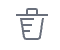
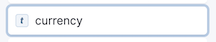
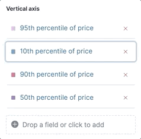
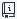
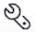
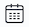
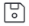
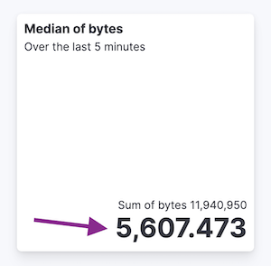

Create visualizations with Lens
editTo create a visualization, drag the data fields you want to visualize to the workspace, then Lens uses visualization best practices to apply the fields and create a visualization that best displays the data.
With Lens, you can:
- Create area, line, and bar charts with layers to display multiple indices and chart types.
- Change the aggregation function to change the data in the visualization.
- Create custom tables.
- Perform math on aggregations using Formula.
- Use time shifts to compare the data in two time intervals, such as month over month.
- Add annotations and reference lines.
Create visualizations
editIf you’re unsure about the visualization type you want to use, or how you want to display the data, drag the fields you want to visualize onto the workspace, then let Lens choose for you.
If you already know the visualization type you want to use, and how you want to display the data, use the following process.
Choose the visualization type.
- Before you drag fields to the workspace, open the Visualization type dropdown, then select the visualization you want to use.
- To view more visualizations that Lens automatically created for the fields, click Suggestions. If one of the Suggestions meets your visualization needs, click Save and return to add it to the dashboard.
Choose the data you want to visualize.
- Drag the fields directly to the layer pane. Lens automatically selects the aggregation function.
- If you want to learn more about the data a field contains, click the field.
- To visualize more than one data view, click Add layer, select the layer type, then select the data view.
Edit and delete.
-
Click
 on the panel, then Edit visualization.
on the panel, then Edit visualization.
- To change the aggregation Quick function and, click the field in the flyout.
- To delete a field, click  next to the field.
-
To duplicate a layer, click in the flyout, then select Duplicate layer.
-
To clear the layer configuration, click in the flyout, then select Clear layer.
- Click Apply and close.
Use the Edit visualization flyout to make edits without having to leave the dashboard, or click Edit in Lens to make edits using the Lens application.
Change the fields list
editChange the fields list to display a different data view, different time range, or add your own fields.
-
To create a visualization with fields in a different data view, open the data view dropdown, then select the data view.
For more information about data views, refer to Create a data view.
- If the fields list is empty, change the time filter.
-
To add fields, open the data view dropdown, then select Add a field to this data view.

For more information about adding fields to data views and examples, refer to Explore your data with runtime fields.
Create custom tables
editTables are highly customizable, and provide you with text alignment, value formatting, coloring options, and more.
- From the Visualization type dropdown, select Table.
- Drag the fields you want to visualize to the workspace.
-
To sort or hide the columns, click the arrow next to the column heading, then select an option.
All columns that belong to the same layer pane group are sorted in the table.
-
To change the display options, click a Metrics field in the layer pane, then configure the following options:
- Name — Specifies the field display name.
- Collapse by — Aggregates all metric values with the same value into a single number.
- Value format — Specifies how the field value displays in the table.
- Text alignment — Aligns the values in the cell to the Left, Center, or Right.
- Hide column — Hides the column for the field.
- Directly filter on click — Turns column values into clickable links that allow you to filter or drill down into the data.
- Summary row — Adds a row that displays the summary value. When specified, allows you to enter a Summary label.
- Color by value — Applies color to the cell or text values. To change the color, click Edit.
Create visualizations with keyboard navigation
editTo use a keyboard instead of a mouse, use the Lens fully accessible and continuously improved drag system.
-
Select the field in the fields list or layer pane. Most fields have an inner and outer select state. The inner state opens a panel with detailed information or options. The outer state allows you to drag the field. Tab through the fields until you get the outer state on the field.
 -
Complete the following actions:
- To select a field, press Space bar.
- To select where you want to drop the field, use the Left and Right arrows.
- To reorder the fields on the layer pane, use the Up and Down arrows.
-
To duplicate an action, use the Left and Right arrows, then select the Drop a field or click to add field you want to use.

- To confirm the action, press Space bar. To cancel, press Esc.
Use formulas to perform math
editFormulas allow you to perform math on aggregated data. The most common formulas divide two values to produce a percent.
- In the layer pane, click a field.
-
Click Formula, then enter the formula.
- Filter ratio example
-
To filter a document set, use
kql='', then compare to other documents within the same grouping:count(kql='response.status_code > 400') / count()
- Week over week example
-
To get the value for each grouping from the previous week, use
shift='1w'.percentile(system.network.in.bytes, percentile=99) / percentile(system.network.in.bytes, percentile=99, shift='1w')
You are unable to combine different time shifts, such as
count(shift="1w") - count()andcount(shift="1w") - count(shift="1m"), with the Top values function. - Percent of total example
-
To convert each grouping into a percent of the total, formulas calculate
overall_sumfor all groupings:sum(products.base_price) / overall_sum(sum(products.base_price))
For detailed information on formulas, click .
- To accurately display the formula, select Percent from the Value format dropdown.
Compare differences over time
editCompare your real-time data to the results that are offset by a time increment. For example, you can compare the real-time percentage of a user CPU time spent to the results offset by one hour.
- In the layer pane, click the field you want to offset.
- Click Advanced.
- In the Time shift field, enter the time offset increment.
For a time shift example, refer to Compare time ranges.
Create partition charts with multiple metrics
editTo create partition charts, such as pie charts, configure one or more Slice by dimensions to define the partitions, and a Metric dimension to define the size. To create partition charts with multiple metrics, use the layer settings. Multiple metrics are unsupported for mosaic visualizations.
-
In the layer pane, click , then select Layer settings.
- Select Multiple metrics.
- Click X.
Improve visualization loading time
editThis functionality is in technical preview and may be changed or removed in a future release. Elastic will work to fix any issues, but features in technical preview are not subject to the support SLA of official GA features.
Data sampling allows you to improve the visualization loading time. To decrease the loading time, use a lower sampling percentage, which also decreases the accuracy. Use low sampling percentages on large datasets.
-
In the Edit visualization flyout, click , then select Layer settings.
- To select the Sampling percentage, use the slider.
- Click Apply and close.
- Click Save.
Add annotations
editThis functionality is in technical preview and may be changed or removed in a future release. Elastic will work to fix any issues, but features in technical preview are not subject to the support SLA of official GA features.
Annotations allow you to call out specific points in your visualizations that are important, such as significant changes in the data. You can add annotations for any data view, add text and icons, specify the line format and color, and more.
Annotations support two placement types:
- Static date — Displays annotations for specific times or time ranges.
- Custom query — Displays annotations based on custom Elasticsearch queries. For detailed information about queries, check Semi-structured search.
Any annotation layer can be saved as an annotation group to the Visualize Library in order to reuse it in other visualizations. Any changes made to the annotation group will be reflected in all visualizations to which it is added.
Create a new annotation layer.
- In the layer pane, click Add layer > Annotations > New annotation.
- Select the data view for the annotation.
- From the fields list, drag a field to the Add an annotation field.
-
To use global filters in the annotation, click
, then select Keep global filters from the dropdown.When you add the visualization to dashboards,  appears, which allows you to view settings changes to the visualization.
Create static annotations.
- Select Static date.
- In the Annotation date field, click , then select the date.
- To display the annotation as a time range, select Apply as range, then specify the From and To dates.
Create custom query annotations.
- Select Custom query.
-
Enter the Annotation query for the data you want to display.
For detailed information about queries and examples, check Semi-structured search.
- Select the Target date field.
Specify the annotation appearance.
- Enter the annotation Name.
- Change the Appearance options for how you want the annotation to display on the visualization.
- If you created a custom query annotation, click Add field to add a field to the annotation tooltip.
- To close, click X.
Save the annotation group to the library.
- In the layer pane, on your annotation layer, click .
- Enter the Title, Description, and add any applicable Tags.
- Click Save group.
Add a library annotation group to a visualization.
- In the layer pane, click Add layer > Annotations > Load from library.
- Select the annotation group you want to use.
Add reference lines
editWith reference lines, you can identify specific values in your visualizations with icons, colors, and other display options. You can add reference lines to any visualization type that displays axes.
For example, to track the number of bytes in the 75th percentile, add a shaded Percentile reference line to your time series visualization.

- In the layer pane, click Add layer > Reference lines.
-
Click the reference line value, then specify the reference line you want to use:
- To add a static reference line, click Static, then enter the reference line value you want to use.
- To add a dynamic reference line, click Quick functions, then click and configure the functions you want to use.
- To calculate the reference line value with math, click Formula, then enter the formula.
- Specify the display options, such as Display name and Icon, then click Close.
Apply filters
editYou can use the query bar to create queries that filter all the data in a visualization, or use the layer pane and legend filters to apply filters based on field values.
Apply multiple KQL filters
editWith the Filters function, you can apply more than one KQL filter, and apply a KQL filter to a single layer so you can visualize filtered and unfiltered data at the same time.
- In the layer pane, click a field.
- Click the Filters function.
-
Click Add a filter, then enter the KQL filter you want to apply.
To try the Filters function on your own, refer to Compare a subset of documents to all documents.
Apply a single KQL filter
editWith the Filter by advanced option, you can assign a color to each filter group in Bar and Line and area visualizations, and build complex tables. For example, to display failure rate and the overall data.
- In the layer pane, click a field.
- Click Add advanced options, then select Filter by.
- Enter the KQL filter you want to apply.
Apply legend filters
editApply filters to visualizations directly from the values in the legend. Bar, Line and area, and Proportion visualizations support legend filters.
In the legend, click the field, then choose one of the following options:
- Filter for value — Applies a filter that displays only the field data in the visualization.
- Filter out value — Applies a filter that removes the field data from the visualization.
Configure the visualization components
editEach visualization type comes with a set of components that you access from the editor toolbar.
The following component menus are available:
- Visual options — Specifies how to display area, line, and bar chart options. For example, you can specify how to display the labels in bar charts.
- Labels — Specifies how to display the labels for donut charts, pie charts, and treemaps.
- Legend — Specifies how to display the legend. You can choose to display the legend inside or outside the visualization, truncate the legend values when they’re too long, and select additional statistics to show.
- Left axis, Bottom axis, and Right axis — Specify how you want to display the chart axes. For example, add axis labels and change the orientation and bounds.
Customize a visualization legend
editWhen creating or editing a visualization, you can customize the way the legend gets displayed, and the data it displays. To do that, look for the icon.
The options available can vary based on the type of chart you’re setting up. For example, showing additional statistics is only possible for time series charts.
Change the legend’s display
With the Visibility, Position, and Width options, you can adjust the way the legend appears in or next to the visualization.
Truncate long labels
With the Label truncation option, you can keep your legend minimal in case of long labels that span over multiple lines.
Show additional statistics for time series charts
To make your legends as informative as possible, you can show some additional Statistics for charts with a timestamp on one of the axes, and add a Series header.
Bar, Line and Area charts can show the following values:
- Average: Average value considering all data points in the chart
- Median: Median value considering all data points in the chart
- Minimum: Minimum value considering all data points in the chart
- Maximum: Maximum value considering all data points in the chart
- Range: Difference between min and max values
- Last value: Last value considering all data points in the chart
- Last non-null value: Last non-null value
- First value: First value considering all data points in the chart
- First non-null value: First non-null value
- Difference: Difference between first and last values
- Difference %: % difference between first and last values
- Sum: Sum of al values plotted in the chart
- Count: number of data points plotted in the chart
- Distinct Count: number of data points with different values plotted in the chart
- Variance: Variance of all data points plotted in the chart
- Std Deviation: Standard deviation of all data points plotted in the chart
- Current or last value: The exact value of the current or last data point moused over
All statistics are computed based on the selected time range and the aggregated data points shown in the chart, rather than the original data coming from Elasticsearch.
For example, if the metric plotted in the chart is Median(system.memory) and the time range is last 24 hours, when you show the Max statistic in the Legend, the value that shows corresponds to the Max[Median(system.memory)] for the last 24 hours.
Explore the data in Discover
editWhen your visualization includes one data view, you can open and explore the visualization data in Discover.
To get started, click Explore data in Discover in the toolbar.
For more information about exploring your data with Discover, check out Discover.
View the visualization data and requests
editTo view the data included in the visualization and the requests that collected the data, use the Inspector.
- In the toolbar, click Inspect.
-
Open the View dropdown, then click Data.
- From the dropdown, select the table that contains the data you want to view.
- To download the data, click Download CSV, then select the format type.
-
Open the View dropdown, then click Requests.
- From the dropdown, select the requests you want to view.
- To view the requests in Console, click Request, then click Open in Console.
Save and add the panel
editSave the panel to the Visualize Library and add it to the dashboard, or add it to the dashboard without saving.
To save the panel to the Visualize Library:
- Click Save to library.
- Enter the Title and add any applicable Tags.
- Make sure that Add to Dashboard after saving is selected.
- Click Save and return.
To save the panel to the dashboard:
- Click Save and return.
-
Add an optional title to the panel.
- In the panel header, click No Title.
- On the Panel settings window, select Show title.
- Enter the Title, then click Save.
Frequently asked questions
editFor answers to common Lens questions, review the following.
When should I normalize the data by unit or use a custom interval?
- Normalize by unit — Calculates the average for the interval. When you normalize the data by unit, the data appears less granular, but Lens is able to calculate the data faster.
- Customize time interval — Creates a bucket for each interval. When you customize the time interval, you can use a large time range, but Lens calculates the data slower.
To normalize the interval:
- In the layer pane, click a field.
- Click Add advanced options > Normalize by unit.
- From the Normalize by unit dropdown, select an option, then click Close.
To create a custom interval:
- In the layer pane, click a field.
- Select Customize time interval.
- Change the Minimum interval, then click Close.
What data is categorized as Other?
The Other category contains all of the documents that do not match the specified criteria or filters. Use Other when you want to compare a value, or multiple values, to a whole.
By default, Group other values as "Other" is enabled when you use the Top values function.
To disable Group other values as "Other", click a field in the layer pane, click Advanced, then deselect Group other values as "Other".
How do I add documents without a field?
By default, Lens retrieves only the documents from the fields. For bucket aggregations, such as Top values, you can add documents that do not contain the fields, which is helpful when you want to make a comparison to the whole documentation set.
- In the layer pane, click a field.
- Click Advanced, then select Include documents without this field.
When do I use runtime fields vs. formula?
Use runtime fields to format, concatenate, and extract document-level fields. Runtime fields work across all of Kibana and are best used for smaller computations without compromising performance.
Use formulas to compare multiple Elasticsearch aggregations that can be filtered or shifted in time. Formulas apply only to Lens panels and are computationally intensive.
Can I add more than one y-axis scale?
For each y-axis, you can select Left and Right, and configure a different scale.
Why is my value the incorrect color when I use value-based coloring?
Here’s a short list of few different aspects to check:
- Make sure the value falls within the desired color stop value defined in the panel. Color stop values are "inclusive".
- Make sure you have the correct value precision setup. Value formatters could round the numeric values up or down.
-
Make sure the correct color continuity option is selected. If the number is below the first color stop value, a continuity of type
BeloworAbove and below rangeis required. -
The default values set by the Value type are based on the current data range displayed in the data table.
-
If a custom
Numberconfiguration is used, check that the color stop values are covering the current data range. -
If a
Percentconfiguration is used, and the data range changes, the colors displayed are affected.
-
If a custom
How do I sort by multiple columns?
Multiple column sorting is unsupported, but is supported in Discover. For information on how to sort multiple columns in Discover, refer to Explore the fields in your data.
Why is my field missing from the fields list?
The following field types do not appear in the Available fields list:
- Full-text
- geo_point
- flattened
- object
Verify if the field appears in the Empty fields list. Lens uses heuristics to determine if the fields contain values. For sparse data sets, the heuristics are less precise.
What do I do with gaps in time series visualizations?
When you create Area and Line charts with sparse time series data, open Visual options in the editor toolbar, then select a Missing values option.
Can I statically define the y-axis scale?
You can set the scale, or bounds, for area, bar, and line charts. You can configure the bounds for all functions, except Percentile. Logarithmic scales are unsupported.
To configure the bounds, use the menus in the editor toolbar. Bar and area charts required 0 in the scale between Lower bound and Upper bound.
Is it possible to display icons in data tables?
You can display icons with field formatters in data tables.
How do I inspect Elasticsearch queries in visualizations?
You can inspect the requests sent by the visualization to Elasticsearch using the Inspector. It can be accessed within the editor or in the dashboard.
How do I isolate a single series in a chart?
For area, line, and bar charts, press Shift, then click the series in the legend. All other series are automatically deselected.
How do I visualize saved searches?
Visualizing saved searches in unsupported.
How do I change the number of suggestions?
Configuring the Suggestions is unsupported.
Is it possible to have pagination in a data table?
Pagination in a data table is unsupported. To use pagination in data tables, create an aggregation-based data table.
How do I change the color for a single data point?
Specifying the color for a single data point, such as a single bar or line, is unsupported.
How does dynamic coloring work for the metric visualization?
In the color palette editor, if you select Value type: Number the colors are applied based on the Primary metric value.
The Primary metric refers to the large number displayed in each tile.

If you select Value type: Percent, the primary metric values are mapped to a range between 0 and 100 percent. The bounds of the range depend on your configuration.
The logic is as follows. If there is a Breakdown dimension for multiple visualization tiles:
- When there is a Maximum dimension, the range is from zero to the value of your Maximum dimension.
- When there is no Maximum dimension, the range is from the smallest primary metric values to the greatest primary metric values.
If there is no Breakdown dimension for a single visualization tile:
- When there is a Maximum dimension, the range is from zero to the value of your Maximum dimension.
- When there is no Maximum dimension, Value type: Percent cannot be selected because there’s no way to determine a range.